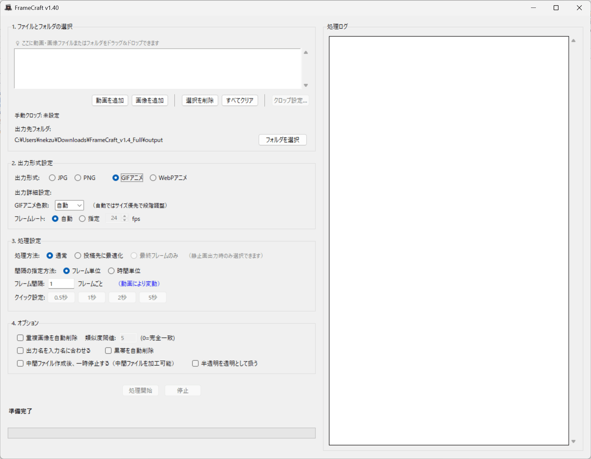

Windows
Desktop
Batch Processing
Offline Processing
主な用途
フレーム抽出
出力形式
画像 / アニメ
処理方式
バッチ
対応形式
14種類
概要
Frame Craftは、動画やアニメーションファイルから指定したフレームや秒間隔で画像を抽出したり、アニメーション形式（GIF/WEBP）に変換が行えるツールです。正確なフレーム抽出、重複画像削除、アニメーション作成ワークフローを必要とするコンテンツクリエイター向けに設計されています。
- 高精度抽出 - フレーム間隔や秒数間隔での正確な指定
- 重複削除 - パーセプチュアルハッシュ技術による類似画像検出
- バッチ処理 - ドラッグ&ドロップで一括処理
- 14種類の動画形式 - MP4、AVI、MOV、GIF、WebPなど
- アニメ出力 - GIF/WEBP、Pixivうごイラストモード対応
対応形式
入力形式
- MP4, AVI, MOV
- MKV, WMV, FLV
- WebM, MPEG, MPG
- M4V, TS, OGV
- GIF, WebP（アニメ）
出力
- 画像: JPG、PNG
- アニメ: GIF、WEBP
- Pixivうごイラスト形式
- 最終フレーム抽出
基本機能
■ 高精度画像抽出
- 正確なフレーム間隔や秒数間隔での指定が可能
- 自動FPS検出機能で、動画に応じた最適な抽出を実現
- Pixivうごイラスト用の出力モードを搭載
- 動画をアニメーション形式（GIF/WEBP）にも変換可能
■ 重複画像自動削除
- パーセプチュアルハッシュ技術による高精度な類似画像検出
- メモリ効率的な処理で大量の画像にも対応
- 重複フレームやほぼ同一のフレームを自動的に削除
■ バッチ処理と効率化
- 複数動画をドラッグ&ドロップで一括処理
- リアルタイム進捗表示と詳細ログ出力で作業状況を把握
- 処理状況を一目で監視
■ 便利な追加機能
- 黒帯自動削除機能で、動画の上下左右の黒帯を自動トリミング
- 直観的なGUIで初心者にも使いやすい設計
- 動画生成の連結始点用の最終フレーム出力
基本的な使い方 & UIスクリーンショット
基本的な使い方
- 「動画を追加」ボタンをクリックまたは動画ファイルをドラッグ&ドロップ
- 「抽出を開始」ボタンで処理開始
シンプルな2ステップで動画からフレーム抽出やアニメーション変換が簡単に行えます。
UIスクリーンショット
UI(日本語)
動作環境
- OS: Windows 10 / Windows 11（64bit）
- RAM: 4GB以上推奨
- ストレージ: 100MB以上の空き容量
GPU不要。CPUで動作し、幅広い環境で使用可能です。
体験版
Windows 10/11
体験版の制限事項
- 1動画あたり最大400画像/フレームまで
- 同時処理1動画まで
- 透かし付き出力
更新情報・変更履歴
最新バージョン
v1.20
リリース日
2025-11-01
最新の更新内容
- GIF/WEBP出力追加
- フレーム抽出精度の向上
- 重複検出アルゴリズムの改善
ライセンス・ご利用上の注意
ライセンス
- 個人での商用利用: 本製品の購入で利用可能
- 企業での商用利用: 別途ご相談ください
重要な注意事項
- 処理時間は動画の長さやPCの性能により変動します
- 処理結果は必ずご確認ください
- フレーム抽出精度は動画の品質やエンコードにより変動する場合があります